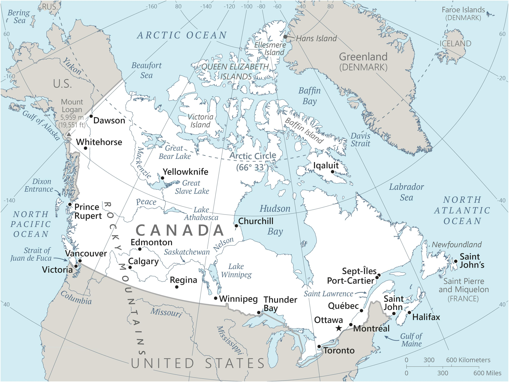

Genel Bilgiler
Kanada, Kuzey Amerika’da yer alan federal anayasal monarşi ile yönetilen bir ülkedir. Başkenti Ottawa’dır. Yaklaşık 39 milyon nüfusa sahiptir. Resmî dilleri İngilizce ve Fransızca’dır. Para birimi Kanada Doları (CAD)’dır. Kanada, BM, G7 ve NATO üyesidir ve doğal kaynakları, geniş alanları ve yüksek yaşam standartları ile tanınır.
Kanada, kuzeyde Arktik Okyanusu, doğuda Atlas Okyanusu, güneyde ABD ve batıda Pasifik Okyanusu ile çevrilidir. Yüzölçümü yaklaşık 9.984.670 km²’dir. Ülke coğrafyası dağlar, göller, nehirler ve büyük orman alanlarından oluşur; Rocky Dağları ve Büyük Göller öne çıkar.
Başkent: Ottawa
Kıta: Kuzey ve Güney Amerika
Yüzölçümü: 9.984.670 km²
Nüfus (2025): 38.000.000
Bayrak Anlamı: Kanada bayrağı kırmızı kenarlar ve ortasında beyaz zemin üzerinde kırmızı bir akçaağaç yaprağı içerir. Kırmızı cesareti ve gücü, beyaz barışı ve saflığı, akçaağaç yaprağı ise ulusal birliği ve doğayı simgeler. Bayrak 1965 yılında kabul edilmiştir.
Kanada Haritası
Ekonomi
Kanada ekonomisi gelişmiş ve çeşitlenmiş bir yapıya sahiptir. Sanayi, hizmet ve doğal kaynak sektörü ekonominin temelini oluşturur. Sanayi alanında otomotiv, havacılık, makine ve enerji öne çıkar. Tarımda buğday, kanola ve süt ürünleri önemlidir. Hizmet sektörü finans, turizm ve teknoloji alanlarında güçlüdür. Kanada, enerji ve doğal kaynak ihracatı ile küresel ekonomide önemli bir role sahiptir.
| Yıl | İhracat (Milyar $) | İthalat (Milyar $) |
|---|---|---|
| 2019 | 400 | 420 |
| 2020 | 350 | 360 |
| 2021 | 430 | 450 |
| 2022 | 460 | 480 |
| 2023 | 470 | 490 |